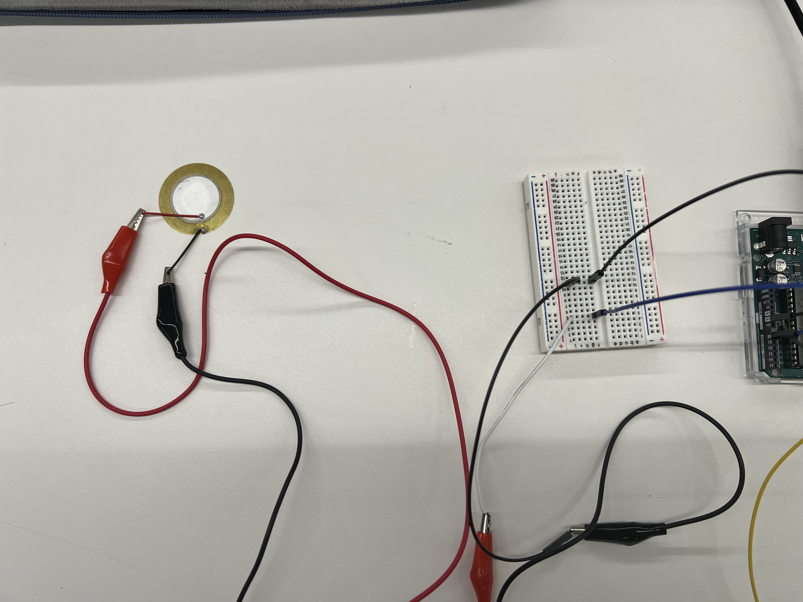
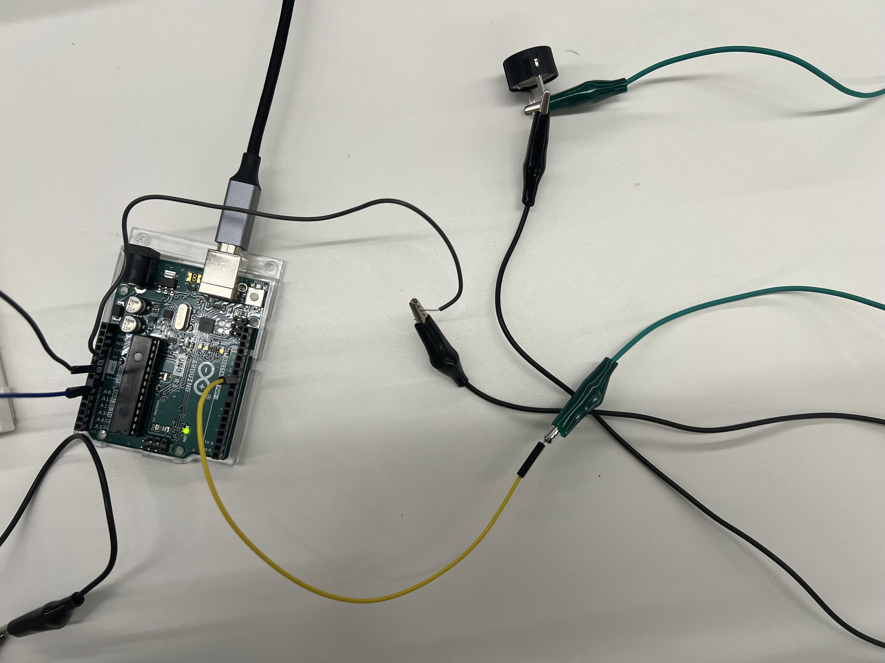

<br>
### Week 7: Electronic Output Devices
<br>
<p>This week we learned about electronic output devices. I decided to work with a Piezo Buzzer. For my final assignment I am thinking of doing something similar to an ultrasonic cleanser which I felt like the buzzer was ther most related to. The first part of my assignment was to write a microcontroller program that incorporates an input and output device. Then, I had to use an oscilloscope.</p>
<br>
##### <strong>Piezo Buzzer</strong>
<p>For my output device, I decided to do the Piezo Buzzer. I first played around with it in class and copied different codes to different songs/tones. I thought that the piezo itself was very fun to play around with and its simplicity but versatality made me want to keep working on it.</p>
<p>However, I did have to include an input device aswell. Last week, for the input device assignment, I also worked with a piezo, so I figured to make the assignment piezo-themed. My input device would be the piezo disc, which would act as my knock sensor, and my output device would be the piezo buzzer which would buzz once the piezo was touched.</p>
<p>The set up itself was actualy more simply than expected. It really was just combing both set ups of the piezo buzzer and the piezo disc together.<p>
<br>
<div class="row">
<div class="column2">
<center><figcaption>Piezo Disc (Knock Sensor)</figcaption></center>
</div>
<div class="column2">
<center><figcaption>Piezo Buzzer</figcaption></center>
</div>
</div>
<br>
<p>The code was a little bit more complicated. As I wrote the code I made it more complex than necessary, and unfortunately the buzzer wouldn't work. After trial and error and simplifying the code, I was finally able to make the buzzer work and only buzz when the piezo was touched.</p>
<div class="box">
<pre><code class="language-arduino">
const int knockSensor = A0;
const int piezoBuzz = 10;
void setup() {
pinMode (knockSensor, INPUT);
pinMode (piezoBuzz, OUTPUT);
}
void loop() {
int sensorvalue =
analogRead (knockSensor);
if (sensorvalue > 1000) {
tone (piezoBuzz, 1000);
delay (100);
noTone (piezoBuzz);
}
}
</code></pre> </div>
<br>
<p>The piezo disc/knock sensor was at A0 and the buzzer was connected to pin 10. Then, I declared the sensor the input and the buzzer the output. Then, the void loop function explains that if the sensor value goes over 1000 then the tone of the piezo will be 1000Hz, if not the buzzer wouldn't buzz.</p>
<br>
<div class="row">
<div class="column2">
<center><video width="350" height="500" controls>
<source src="piezo-hund-hz.mp4" type="video/mp4"></video><figcaption>Piezo Buzzer at 100Hz</figcaption></center>
</div>
<div class="column2">
<center><video width="350" height="500" controls>
<source src="piezo-thou-hz.mp4" type="video/mp4"></video><figcaption>Piezo Buzzer at 1000Hz</figcaption></center>
</div>
<br>
<p>Eventually, I hope to be able to connect this to an ultrasonic sensor and use this for my final project.</p>
<br>
##### <strong>Oscilloscope</strong>
<center>[HOME](../index.html)</center>